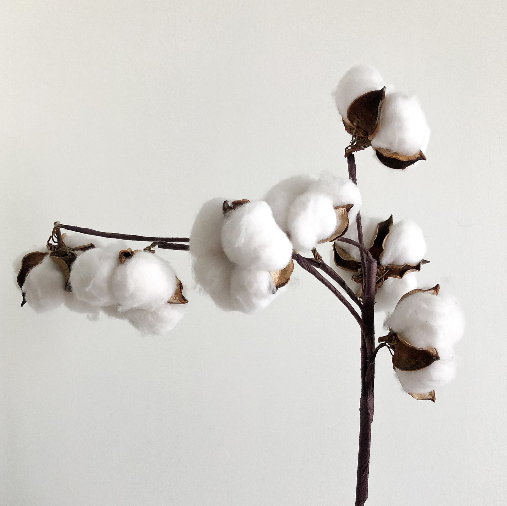

WE ARE NOT SUSTAINABLE
YET...
Here is where we're at
Cool graph showing here
Nobody knows what sustainable fashion might look like
but... we want to be the first to find out
We’ll continue to deliver innovative, concious and authentic fashion for you, at a price you can afford while constantly working in the background to always and forever decrease our carbon footprint, our water usage, increase our renewable energy percentage and investigate our supply chain deeper and deeper to provide more than just a fair working wage for our workers, but having a positive impact on their life in our own beautiful way.
and... Silfen believes in actions over words
Above is our interactive roadmap of sustainabilty goals. There we’ll share with you our big wins, our setbacks, our needs, our small steps and our big steps. As a tiny company, right now consisting of 8 employees, a lot of goals have to lay further down the line, where growth will allow us bigger seats at the table and we can change the world for the better.
Steps we’ve taken so far

Reducing water consumption
We try to minimize the water consumption in our production in an
effort to decrease its negative impact on the environment and to
ensure local access to clean water.
All cotton used for production of SILFEN bags is either made from
eco-friendly or organic cotton. This means that there is much less
consumption of water throughout production and treatment of our
cotton, than conventional cotton products.
In 2020 we introduced a new collection of bags made from a new
material; rPET or Recycled Polyethylene Terephthalate. This recycled
material is primarily made from plastic waste collected from the
oceans or from recycled plastic bottles gathered from all over the
world.

shipping
We are aware of the major impact that the shipping industry have on
our planet. Because of this, we strive to choose
environmental-friendly shipping options when applicable. We are in
close contact with other brands in our aim to minimize shipping as
much as possible – by joining forces.
We strive to ship as much as possible in bulk – mostly by sea or
train. These are the most environmentally friendly modes of
shipping, reducing polluting emissions.

Working conditions
At Team Silfen, we believe that we have many, wide-spanning
obligations. It is not only the environment, we must care for, but
also the people who build our products from scratch. We believe that
it is our job to amplify a healthy and socially responsible conduct
within our organization, including all our suppliers. We ensure the
ethical development of future generations by guaranteeing that our
suppliers do not support or make use of child labor. We encourage
our factories to ensure that all families have the possibility to
put their children in school.
Team Silfen provides insurance to all our hard-working employees as
well as their family. Our factories also grant pensions to all
employees, providing them with financial stability after retirement.
We support the different religions of employees and protect their
right to engage with rituals, prayers etc. at any time. We condemn
discrimination, and make sure that the employees are protected from
prejudice and injustice at the workplace.
We visit our manufacturers regularly to ensure that they follow the
issued principles regarding working conditions, quality, pollution
etc. This allows us to promise our customers that a SILFEN bag is
always crafted in a responsible manner.
All our manufacturers are SA8000 certified.
Materials
Cotton
Some of the SILFEN bags is made from Cotton – a fabric commonly known as polluting. At SILFEN, our cotton is either made from eco-friendly or organic cotton. Both materials require far less water consumption than conventional cotton products. Every nylon product is made from eco-friendly material, meaning that the journey from raw material to SILFEN bag impacts the environment as little as possible.
Leather

All leather goods are made from sustainable high-quality calf leather and is a bi product of the food industry, meaning that every part of the animal is utilized in various industries. We love colors and new trends, but we incorporate consciousness and quality in our design processes to retain timelessness in all products. All our components, zippers, thread, reinforcement, glue etc., are made from high-quality raw materials. We encourage our customers to take good care of their bag, prolonging the life of the product. By caring for your bag, you will be able to create more experiences with it – an important factor in creating a more sustainable, mindful business.
Vegan
In 2019, we presented our first vegan option in a collection, and we have continued to this since then. We make sure that all non-leather material – e.g. our nylon, lacquer – are all 100% vegan, promising that these products do not contain any parts from animals.
Rpet Line

In 2020 we are expecting to launch a new collection manufactured in rPET, recycled polyethylene terephthalate. The material is well known as it is made from water bottles across the world – bottles that often end up discarded in oceans or nature. This recycled material is primarily made from plastic waste collected from the oceans, or from recycled plastic bottles gathered from all over the world. With this new collection, we aim to emphasize the impact of pollution irresponsible wasting. We wish to pass this awareness to our customers, and to encourage them to help clean our oceans!